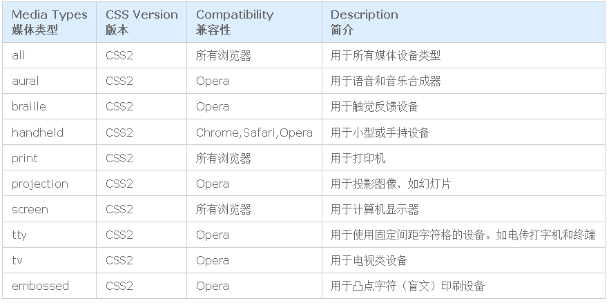
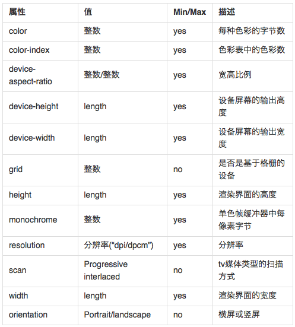
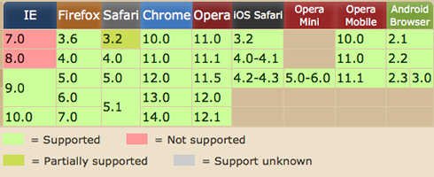

一、媒体类型：

常用的三种为：all，print和screen
二、媒体类型引用方法：link标签，xml方式，@import和css3新增的@media四种
link方法引入媒体类型其实就是在<link>标签引用样式的时候，通过link标签中的media属性来指定不同的媒体类型。例如：
<link rel="stylesheet" type="text/css" href="css.css" media="screen"> 2.xml方式：
xml方式引用媒体类型和link引入媒体类型极为相似，也是通过media属性来指定的。
<?xml-stylesheet rel="stylesheet" media="screen" href="css.css"?>3.@import方式：
@import是用来引用样式文件方法之一，同样也可以用来引用媒体类型。@import引入媒体类型主要有两种方式：
注意：@import必须置于<style>标签或者css文件首行，否则该语句将会被忽略
1.在样式中(即在css文件中)@import调用另一个样式文件，例如：
@import url('css.css') screen and (max-width: 500px);2.在<style></style>标签中引入(在IE6和IE7中不被支持)，例如：
<style>
@import url('css.css') screen and (max-width: 1000px);
</style>4.media方式
@media是CSS3中新引进的一个特性，称为媒体查询。在页面中也可以通过这个属性来引 入媒体类型。@media引入媒体类型和@import有点类似，也具有两种方式：
1.在样式中引入媒体类型
@media screen {
/*选择器{*/
/*样式代码*/
/*}*/
}2.使用@media引入媒体类型的方式也是在<style>中引用
<style>
@media screen {
/*选择器{*/
/*样式代码*/
/*}*/
}
</style>说完引入媒体类型的四种方式，下面该说说他们的区别了。
1.从属关系区别@import是 CSS 提供的语法规则，只有导入样式表的作用；link是HTML提供的标签，不仅可以加载 CSS 文件，还可以定义 RSS、rel 连接属性等。
2.加载顺序区别
加载页面时，link标签引入的 CSS 被同时加载；@import引入的 CSS 将在页面加载完毕后被加载。
3.兼容性区别@import是 CSS2.1 才有的语法，故只可在 IE5+ 才能识别；link标签作为 HTML 元素，不存在兼容性问题。
4.DOM可控性区别
可以通过 JS 操作 DOM ，插入link标签来改变样式；由于 DOM 方法是基于文档的，无法使用@import的方式插入样式。
5.权重区别(该项有争议，详解请看此文章https://www.cnblogs.com/my--sunshine/p/6872224.html)link引入的样式权重大于@import引入的样式。
结论：强烈建议使用link标签，慎用@import方式。
这样可以避免考虑@import的语法规则和注意事项，避免产生资源文件下载顺序混乱和http请求过多的烦恼。
三、媒体特性（Media Query）
前面有简单的提到，Media Query是CSS3 对Media Type的增强版，其实可以将Media Query看成Media Type(判断条件)+CSS(符合条件的样式规则)，常用的特性w3c共列出来13种。具体的可以参阅：Media features。为了更能理解Media Query，我们在次回到前面的实例上：
<link rel="stylesheet" media="screen and (max-width: 600px)" href="small.css" />
转换成css中的写法为：
@media screen and (max-width: 600px) {
选择器 {
属性：属性值；
}
}
其实就是把small.css文件中的样式放在了@media srceen and (max-width;600px){...}的大括号之中。在语句上面的语句结构中，可以看出Media query和css的属性集合很相似，主要区别在：
1、Media query只接受单个的逻辑表达式作为其值，或者没有值；
2、css属性用于声明如何表现页页的信息；而Media Query是一个用于判断输出设备是否满足某种条件的表达式；
3、Media Query其中的大部分接受min/max前缀，用来表示其逻辑关系，表示应用于大于等于或者小于等于某个值的情况
4、CSS属性要求必须有属性值，Media Query可以没有值，因为其表达式返回的只有真或假两种
常用的Media Query如下表所示：

兼容的浏览器：

下面我们一起来看看Media Queries的具体使用方式
一、最大宽度Max Width
@media (max-width:600px){
.body{
display:none
}
}
上面表示的是：当屏幕小于或等于600px时，将执行内部css渲染W样式eb页面。
二、最小宽度Min Width
@media (min-width:900px){
.body{
display:none
}
}
上面表示的是：当屏幕大于或等于900px时，将执行内部css渲染W样式eb页面。
三、多个Media Queries使用
@media screen and (min-width: 600px) and (max-width:900px){
.body{
display:none
}
}
Media Query可以结合多个媒体查询，换句话说，一个Media Query可以包含0到多个表达式，表达式又可以包含0到多个关键字，以及一种Media Type。正如上面的其表示的是当屏幕在600px-900px之间时采用内部样式来渲染web页面。
四、设备屏幕的输出宽度Device Width
@media screen and (max-device-width:480px) {
.body{
display:none
}
}上面的代码指的是内部样式适用于最大设备宽度为480px，比如说iPhone上的显示，这里的max-device-width所指的是设备的实际分辨率，也就是指可视面积分辨率
五、iPhone4
@media only screen and (-webkit-min-device-pixel-ratio: 2) {
.body{
display:none
}
}上面的样式是专门针对iPhone4的移动设备写的。
六、not关键字
@media not print and (max-width: 1200px) {
.body{
display:none
}
}not关键字是用来排除某种制定的媒体类型，换句话来说就是用于排除符合表达式的设备，特别注意：
not否定的是后面全部的表达式，个人认为可以这么理解，把print和max-width: 1200px看成是两个条件1和条件2，所以上述not表达式可以看成!(条件2 and 条件2)，如果该表达式返回的是true，则执行内部css语句，反之则不执行，其他判断也可以以此类推。
七、only关键字
@media only screen and (max-device-width: 240px) {
.body{
display:none
}
}only(只有支持screen和max-device-width两个条件才会显示)用来定某种特定的媒体类型，可以用来排除不支持媒体查询的浏览器。其实only很多时候是用来对那些不支持Media Query但却支持Media Type的设备隐藏样式表的。其主要有：支持媒体特性（Media Queries）的设备，正常调用样式，此时就当only不存在；对于不支持媒体特性(Media Queries)但又支持媒体类型(Media Type)的设备，这样就会不读了样式，因为其先读only而不是screen；另外不支持Media Qqueries的浏览器，不论是否支持only，样式都不会被采用。
八、其他
在Media Query中如果没有明确指定Media Type，那么其默认为all，如：
@media (min-width: 200px) and (max-width: 1000px) {
img{
display:none
}
}另外还有使用逗号（，）被用来表示并列或者表示或，如下
@media handheld and (max-width: 480px),screen and (max-width: 1000px) {
img{
display:none
}
}上面代码中style.css样式被用在宽度小于或等于480px的手持设备上，或者被用于屏幕宽度大于或等于960px的设备上。